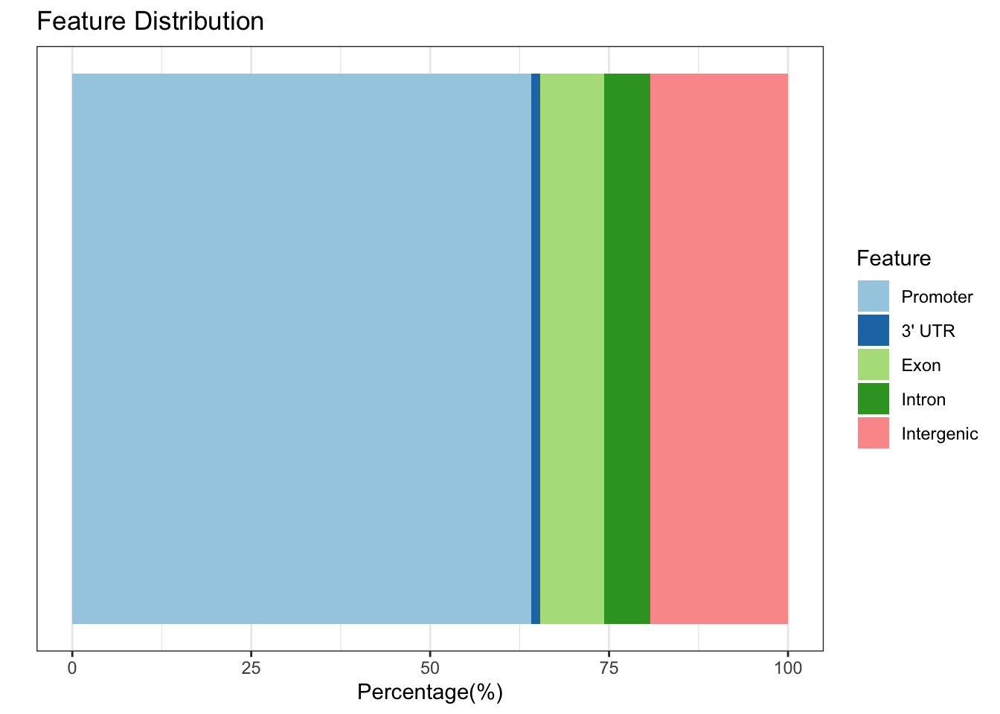
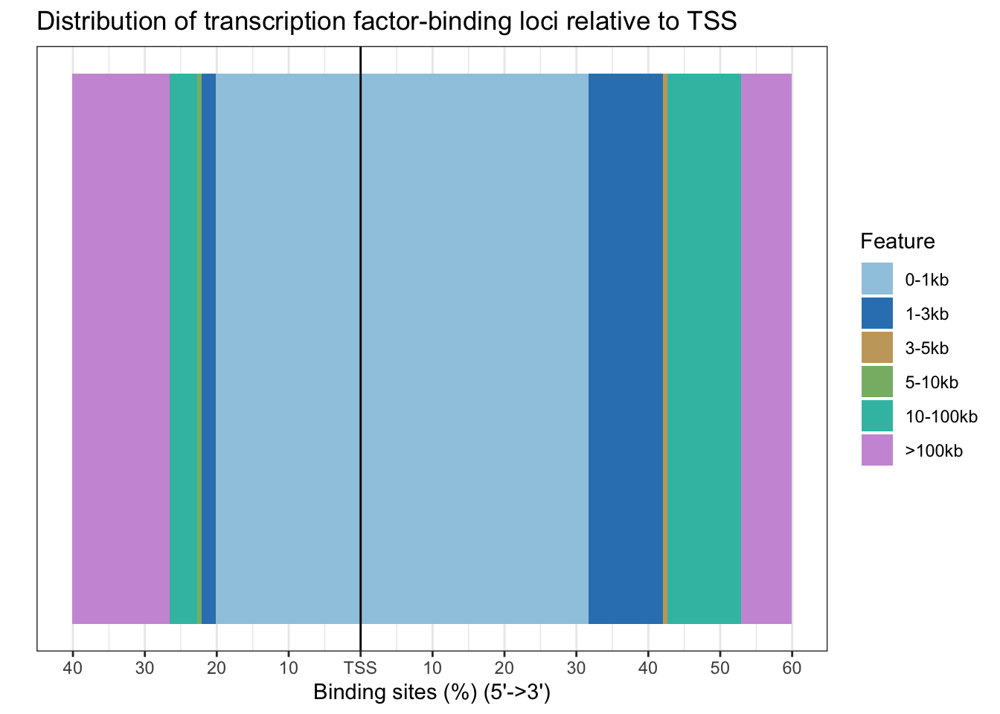
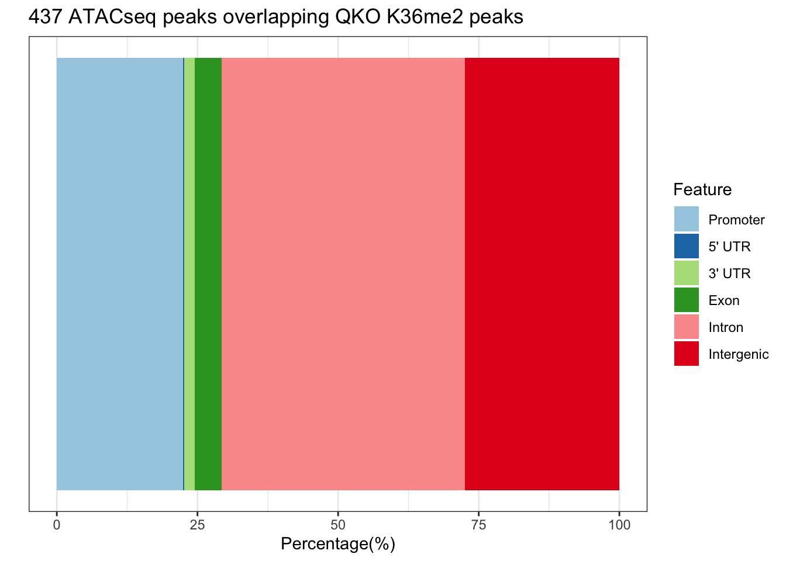
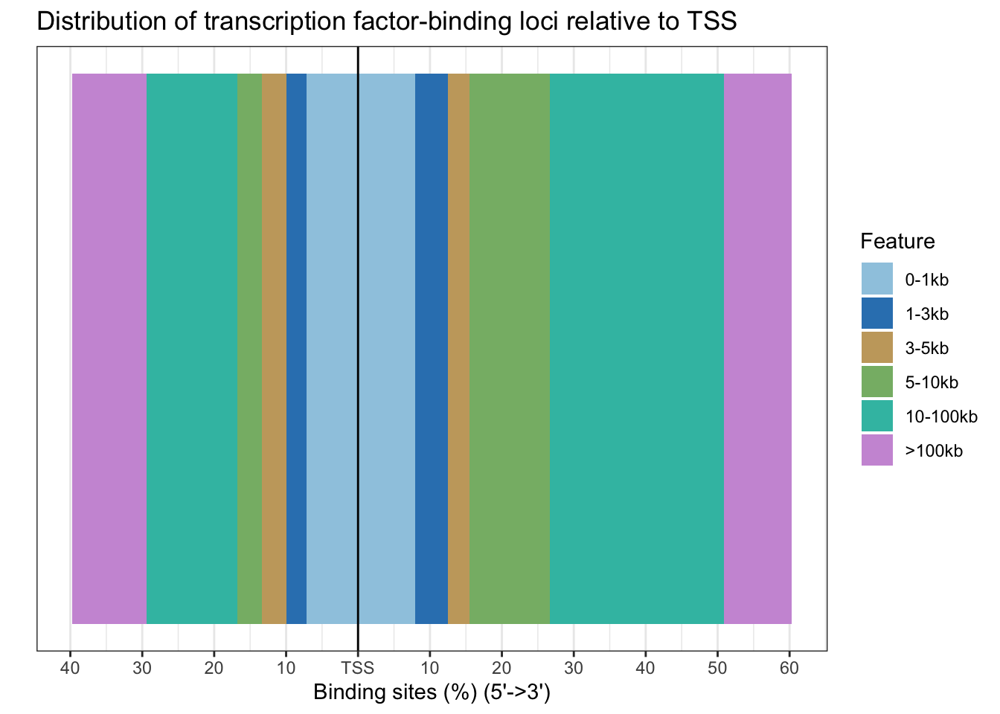
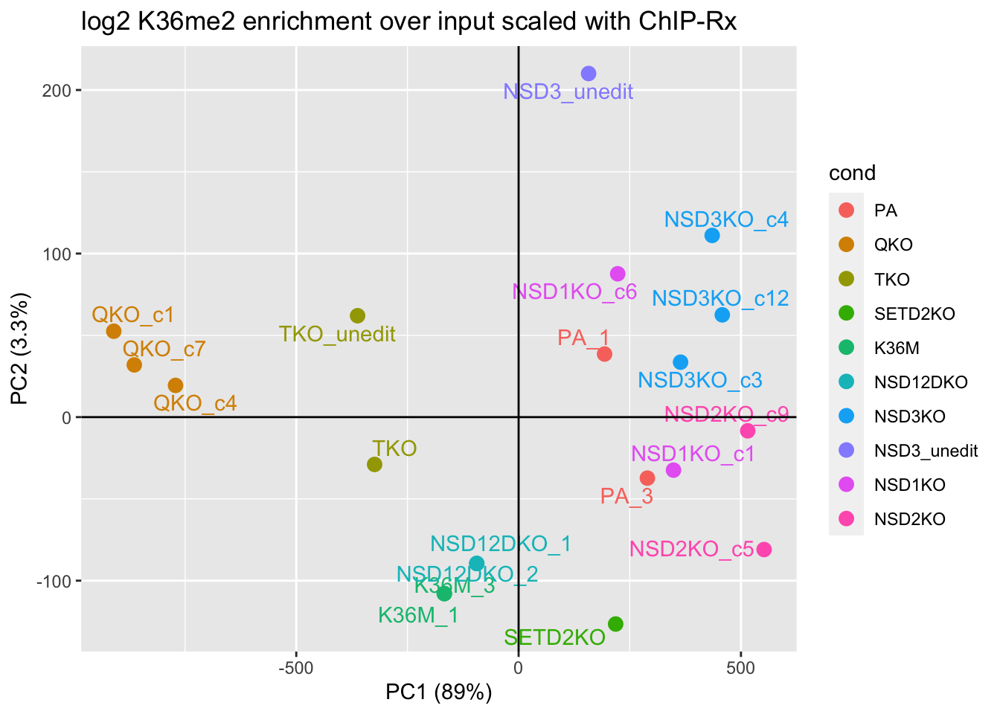

Distribution of QKO K36me2 residual peaks - 156 Total Peaks

Over-representation Analysis - K36me2 Peaks = 156 peaks total
Distribution of ATACseq peaks overlapping K36me2 peaks - 437 total peaks

Over-representation Analysis - ATACseq peaks overlapping K36me2 Peaks = 437 peaks total
